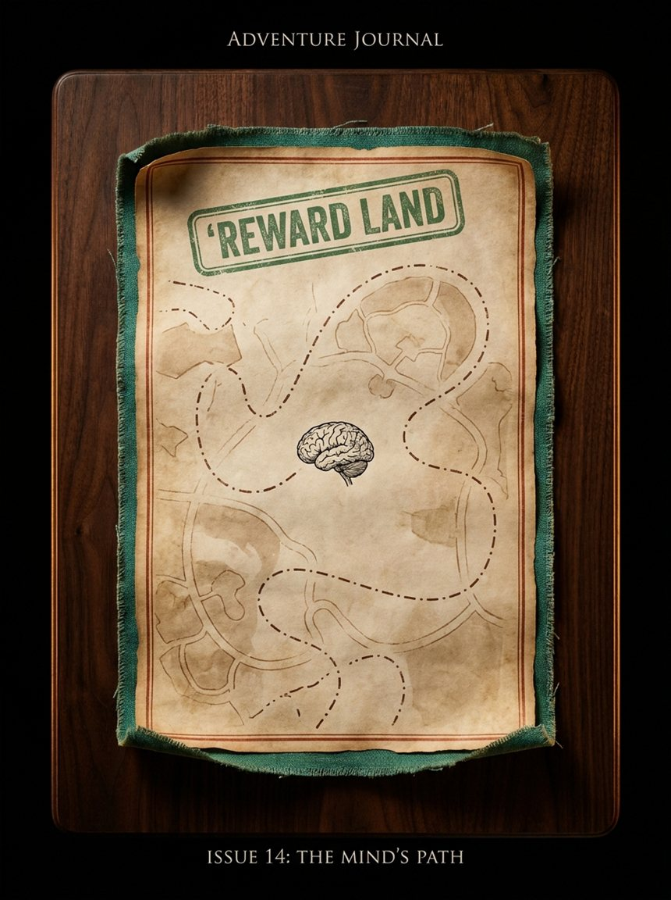
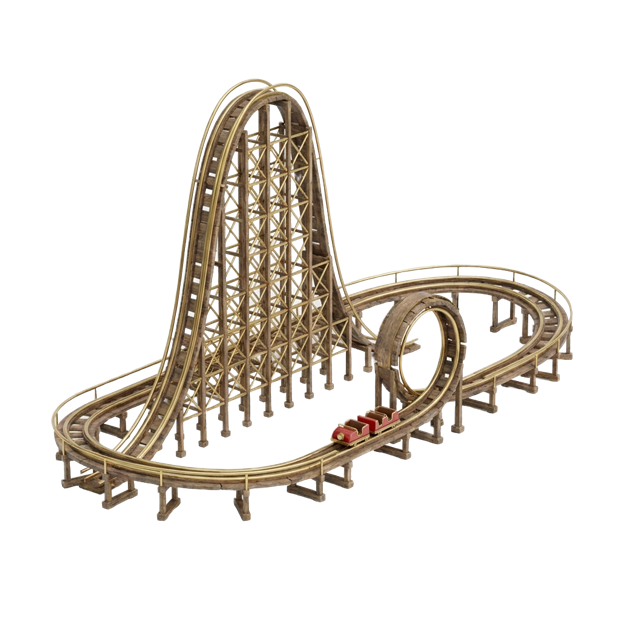
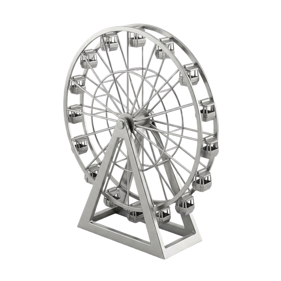
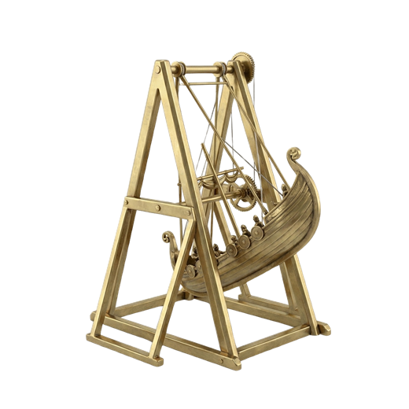

지도 위로 튀어나온 놀이기구에 마우스를 올리면 테두리가 반짝이고, 클릭하면 그 어트랙션의 페이지로 들어갑니다.
기대의 관람차. 천천히 차오르는 만족감을 캐빈마다 담아 돌립니다.
떨어지기 직전, 가장 큰 보상 신호가 발생하는 순간을 달립니다.
불확실성이 클수록 진폭이 커지는 스윙. 리스크와 보상의 진자.
보상은 한 번에 오지 않습니다. 캐빈이 정점에 닿을 때까지, 뇌는 다가올 만족을 미리 계산하며 도파민을 조금씩 흘려보냅니다.
가장 강한 신호는 낙하가 아니라 낙하 직전입니다. 정상에서 멈칫하는 그 찰나, 보상 예측 뉴런이 가장 크게 발화합니다.
진폭은 불확실성입니다. 어디서 멈출지 모를수록 스윙은 커지고, 리스크와 보상의 진자는 더 넓게 흔들립니다.